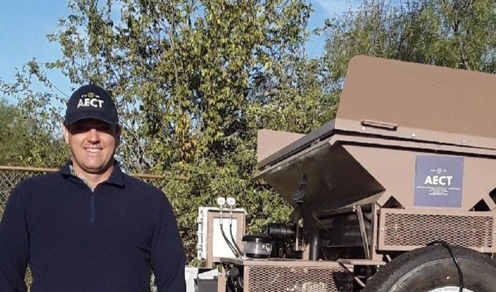
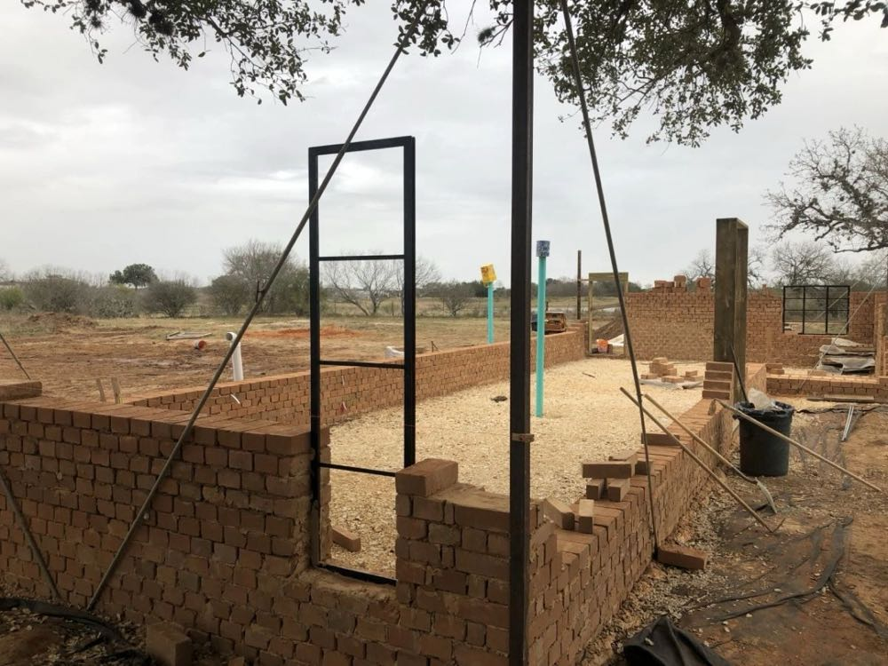
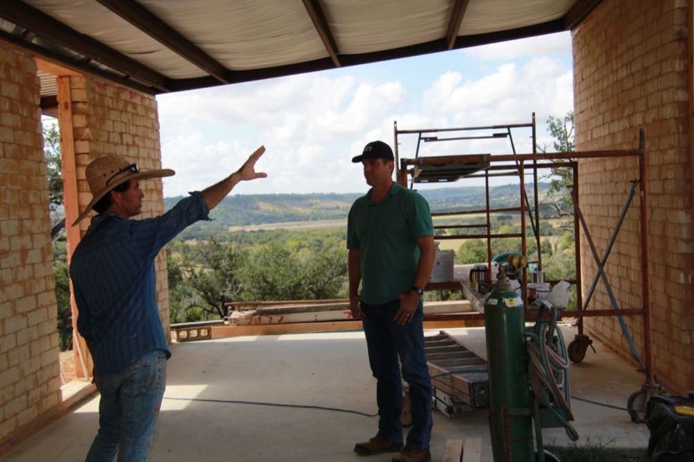
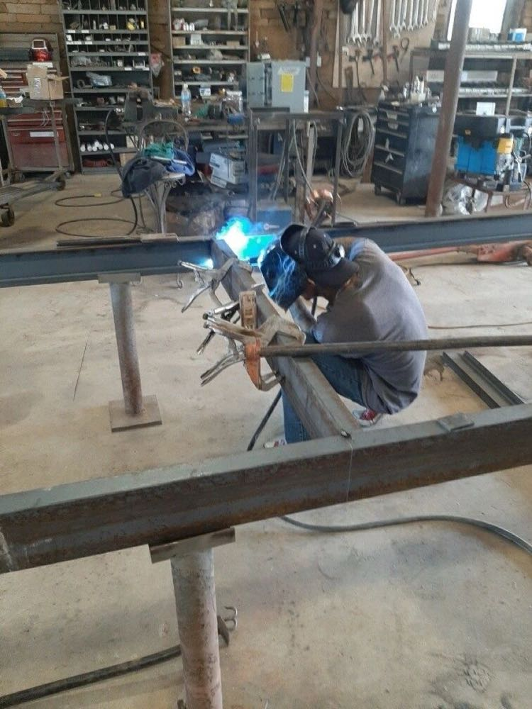
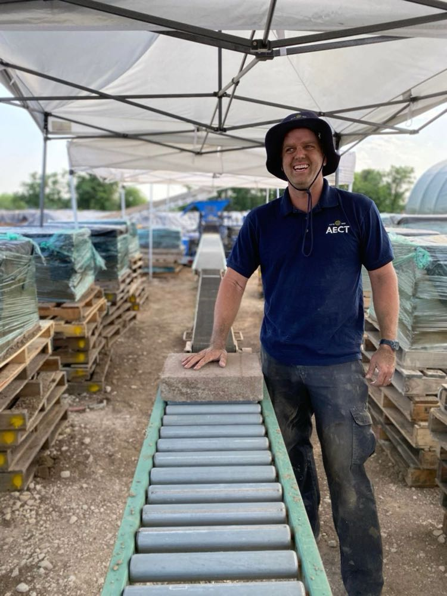
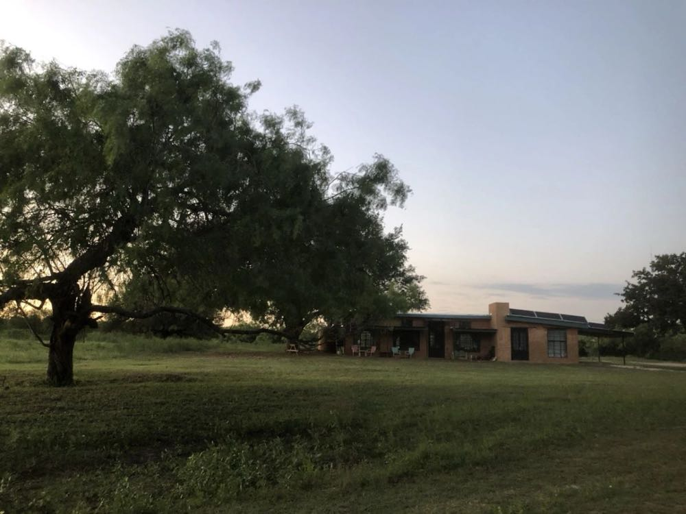
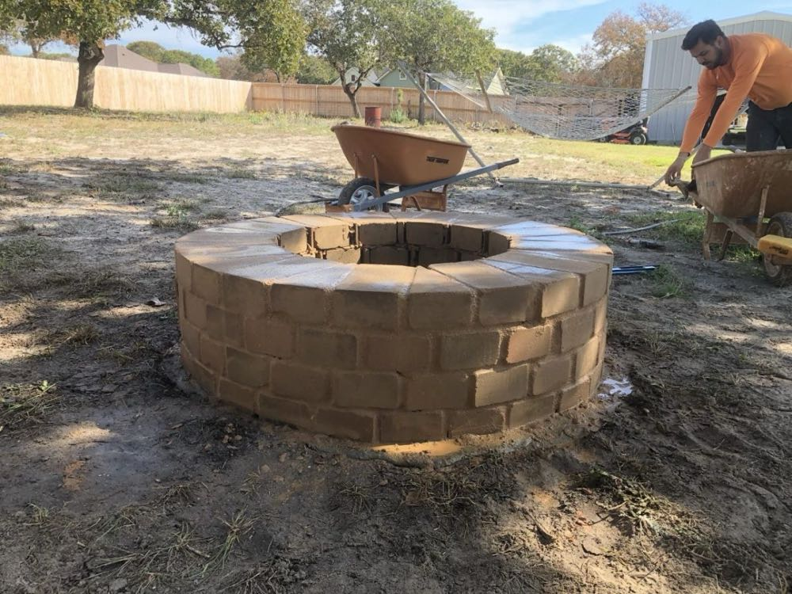
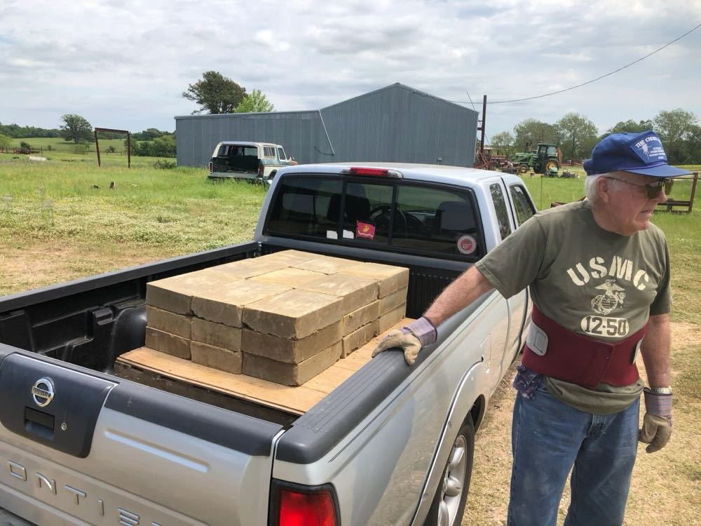

From the block yard
Builds, machines and lessons from 35 years of making compressed earth blocks.

AECT - Our Consulting Services
At AECT, we are known for manufacturing the best, longest-lasting compressed earth block (CEB) machines in the world:

Adobe and CEBs in Marfa, Texas
Last week, I had the pleasure of helping a customer get his AECT 3500 machine up and going in Marfa, Texas. It's a little bit off the beaten path, but if…

Our new CEB bathroom
We were delighted to hold a CEB build workshop at our headquarters in San Antonio this spring. This workshop provided a great opportunity to introduce…

Producing lots of CEB homes in Haiti!
Last week, I had the opportunity to go down to Cap Hatien, Haiti and check in on one of the BP714 machines that we manufactured last year. I had a great…

Fulfilling the latest AECT 3500 CEB machine order - part 2
In May, I wrote a blog entry as we began construction on two brand new 3500s for our Hungarian customer. We faced many difficulties with these machines…

Stabilized vs. Un-stabilized CEBs
The difference between stabilized and un-stabilized compressed earth blocks (CEBs) is commonly mis-understood. Sometimes un-stabilized CEBs are thought to…

Un-stabilized CEB home build outside Blanco, TX
I recently had the pleasure of visiting the build site of one of our customers in Blanco, TX. The Pawly family bought an AECT 3500 CEB machine…

Beginning construction on the Oklahoma CEB home build
Last month I went up to the Durant, OK area to help start construction on the 2-story, 3,600 sf home that a family is building there. In the spring, they…

Fulfilling the latest AECT 3500 CEB machine order
We at AECT hope everyone had a safe and enjoyable Memorial Day. As a 100% veteran-owned business, and with a number of our employees having served in the…

Exciting times at AECT
Well, it's been exactly three years since I sent an email to my friend and ultimately business partner, Steve, asking him what he thought about buying…

Our off-grid CEB home - 1 year later
It's been exactly a year since we put the finishing touches on our off-grid CEB home at our property in SE San Antonio and as my wife, Melissa says, "it…

Building a CEB hearth for a wood-burning stove
I am currently renovating my rental home in NW Arkansas and this week decided I would put a CEB hearth in the house for a wood-burning stove to sit on.…

Building a CEB fire pit
I recently built an outdoor CEB fire pit for a family friend. Fire pits are a nice easy 2-day project that you can do with cement-stabilized compressed…

Making CEBs in Oklahoma
We had a great experience making CEBs outside of Durant, OK last week. We took a 15-year old AECT mixer and an 11-year old 3500 machine…

Pa's CEB garden border
We at AECT have few supporters more dedicated to our cause than my wife Melissa's grandad, Pa. He was there giving me encouragement three years ago when I…